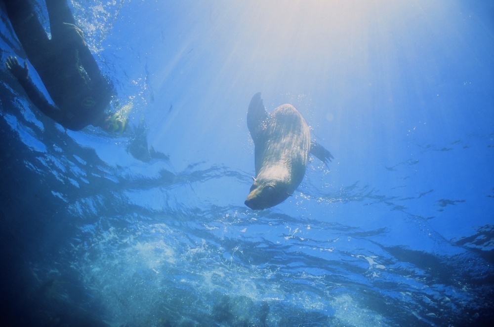
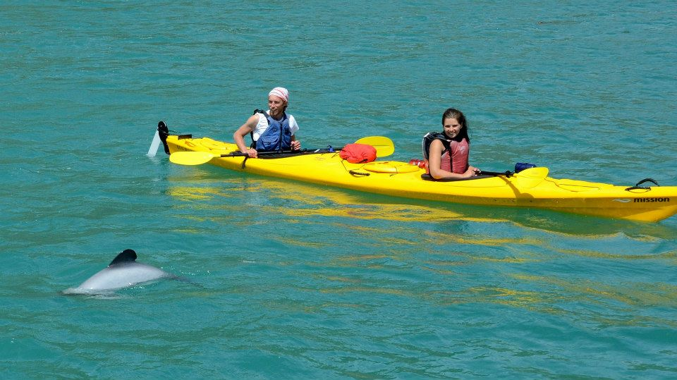
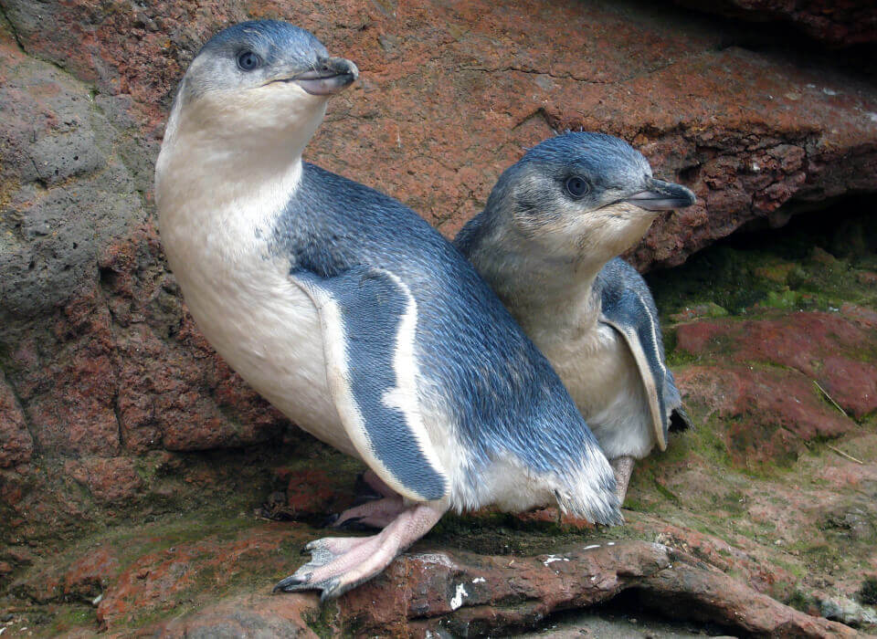
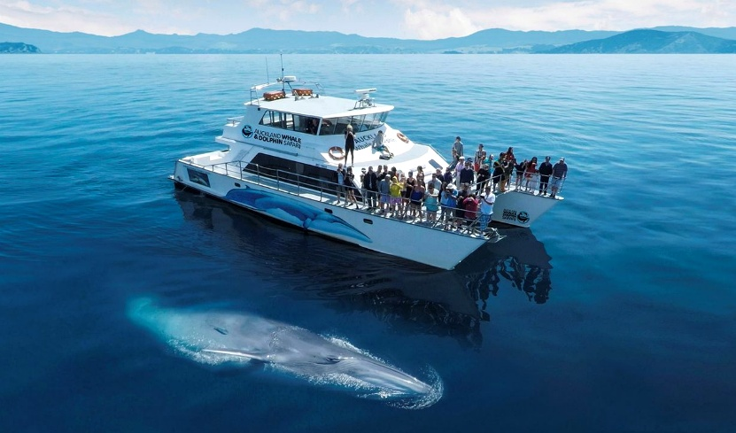

About this page
Explore a curated mix of adventure and wildlife experiences across New Zealand, from white water rafting and ziplining to scenic flights, off-road tours and native species encounters. Each experience is paired with a nearby PurePods stay, making it easy to plan a nature-rich escape with memorable activities and direct booking pathways. See all themes on Experiences and quick answers in the FAQ.





Marine & iconic wildlife
A boat-based whale watching experience in Kaikōura, known for reliable year-round sightings of sperm whales along with dolphins and seabirds. The tours depart from the coast and provide close-up views of marine wildlife in a unique deep-water environment.


Nature exploration & outdoor discovery
A guided sea kayaking experience in the Bay of Islands, exploring sheltered waters, coastal inlets and small islands. The tours combine paddling with local knowledge of the marine environment, offering a slower way to experience the coastline.


Adventure & adrenaline
A guided white water rafting experience on the Kaituna River near Rotorua, known for the Tutea Falls, the highest commercially rafted waterfall in the world. The route combines fast-moving rapids with native forest scenery and expert-led navigation.
From active exploration to quiet overnight stay
After a day focused on landscapes and wildlife, this experience transitions naturally into a PurePods stay. PurePods are glass eco-cabins in remote natural settings, designed for calm immersion in surrounding light, weather and views.
Discover Slow travelFrequently asked questions
What does this Adventure & Wildlife page include?
This draft page groups outdoor and wildlife-oriented experience blocks with a visual placeholder, a short practical description, an external reference link and a PurePods booking pathway.
Are these final destinations and wildlife operators?
No. This version uses replaceable placeholders so final routes, operators and regional pairings can be added once they are confirmed.
How do I continue to booking from this page?
Each block includes a direct PurePods booking pathway, and the main call to action also leads to booking to check live availability and site details.
Adventure & Wildlife
Find your PurePodCheck booking availability, then align your preferred outdoor experience with a nearby PurePod stay.